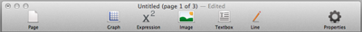

The most commonly used functions are located on the Toolbar. This includes adding worksheet elements, pages and toggling the Property Panel.
Use these buttons to streamline your workflow or use keyboard shortcuts to add elements to your worksheet
Use these buttons to streamline your workflow or use keyboard shortcuts to add elements to your worksheet
Toolbar

Toolbar
-
Relevant Topics